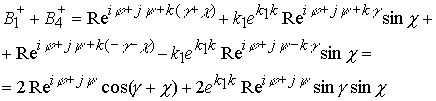
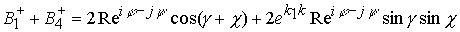
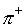
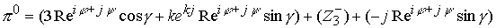
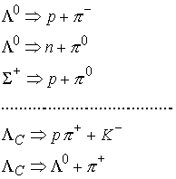
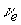
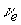
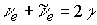

|
В. И. ЕЛИСЕЕВ ВВЕДЕНИЕ В МЕТОДЫ ТЕОРИИ
ФУНКЦИЙ ПРОСТРАНСТВЕННОГО КОМПЛЕКСНОГО ПЕРЕМЕННОГО |
|
10.16. (Продолжение 2 из 2) ОТОЖДЕСТВЛЕНИЕ КОМБИНАЦИЙ КОМПЛЕКСНЫХ ПОДПРОСТРАНСТВ С МИКРОЧАСТИЦАМИ КЛАССИФИКАЦИЯ МИКРОЧАСТИЦ В СООТВЕТСТВИИ С РАЗМЕРАМИ ПРОСТРАНСТВА.
Пространство БАРИОНОВ
Увеличим размерность пространства
|
(10.16.25) |
Произведем выделение барионного подпространства
В силу сопряженности комплексов, как и в предыдущих случаях,
имеем
|
(10.16.26) |
Барионное пространство имеет три взаимно перпендикулярные комплексные координаты
|
(10.16.27) |
Различные комбинации пространства барионов (10.16.26) позволяют определить спектр возможных подпространств
Определим барионное пространство без электрического подпространства
|
 |
(10.16.28) |
Можно рассмотреть комбинацию
|
 |
(10.16.29) |
Два комплекса (10.16.28) и (10.16.29) в сумме дают
|
(10.16.30) |
Получили барионное пространство с нейтральными зарядами электрическим и лептонным.
В барионном пространстве из системы (10.16.26) заменим подпространство электронно-лептонное на сумму положительно заряженных подпространств в виде по формуле (10.16.18), получим
|
(10.16.31) |
Пространство Мезонов не имеет барионного заряженного пространства, поэтому система (10.16.26) должна для их построения выбирать варианты которые исключают барионный заряд
Рассмотрим , таким образом, перешли в пространство электронно лептонного уровня, в котором справедливы ранее выведенные формулы. В этой сумме во втором слагаемом повернем угол , получим
В результате перешли в нейтринный уровень, в котором справедливы формулы, полученные при исследовании этого уровня.
Предыдущую сумму можно представить и в виде
В формуле (10.16.31) нет ограничений на замену пространства положительного пиона на положительный странный мезон , очарованный нестранный мезон или ввести и так далее. Получим спектр заряженных или нейтральных барионов
|
(10.16.32) |
Барионное пространство отождествляется с нуклонами: протоном и нейтроном . Протон и нейтрон связаны между собой реакцией распада
|
(10.16.33) |
Покажем, что реакция отражает процессы происходящие в комплексном пространстве. Нейтрон можно отождествить с любой комбинацией барионного пространства с нейтральным мезоном. В данном случае рассматриваются только пространственные процессы (энергетическая сторона будет исследоваться в дальнейшем), поэтому за нейтрон можно принять комбинацию
|
(10.16.34) |
Протон и нейтрон обладают барионным зарядом, поэтому в этой простейшей комбинации необходимо показать переход нейтрального пиона в заряженный положительно пион с выбросом электрона и антинейтрино.
В соответствии с формулами (10.16.17), (10.16.18), (10.16.19) имеем
=
Пространство  отождествляется с электроном: отрицательно заряженное электрическое подпространство с положительно заряженным электронным нейтрино. В соответствии с реакцией
отождествляется с электроном: отрицательно заряженное электрическое подпространство с положительно заряженным электронным нейтрино. В соответствии с реакцией
Рассмотрим сумму зарядов
Таким образом, сумма разложена на ядро из пространства нейтрино плюс положительно заряженное подпространство электрическое. Окончательно имеем
Третье слагаемое отождествляется по своему пространственному выражению с антинейтрино
.Окончательно имеем динамику преобразования пространств

Подстановка этих значений в формулу положительного бариона по барионному заряду и положительному электрическому заряду дает пространство левой части реакции распада по формуле (10.16.33).
В соответствии с этой реакцией можно сопоставить динамику изменения пространств, а именно электрон и антинейтрино в барионном пространстве отождествляются с выражением
|
(10.16.35) |
Положительно заряженное пространство в барионной структуре будет комплекс
|
(10.16.36) |
Проведенные выкладки подчиняются законам комплексной алгебры и тригонометрии в обычном классическом варианте, поэтому,
Если имеем
|
(10.16.37) |
Все составляющие реакции распада нейтрона перешли в другое измерение в четком соответствии с определениями заряженных подпространств.
Реакция распада нейтрона происходит в пространстве барионов, при этом все частицы ядро в момент распада имеют барионный положительный заряд . После распада электрон и антинейтрино теряют барионный заряд, происходит переход этих частиц в другое измерение, согласно формулам (10.16.37). Центральное ядро остается заряженным барионным и электрическим зарядом. Ядро в данном случае можно рассматривать как Странный Мезон - , который вложен в пространство барионов. Странный мезон распадается по схеме
, который вложен в пространство барионов. Странный мезон распадается по схеме
 ,
,
и представляет ядро состоящее из одного нейтрального образования плюс положительно заряженное образование в электронно лептонном пространстве
Странные Мезоны, очарованные нестранные Мезоны, очарованные странные Мезоны и так далее имеют среди основных каналов распада распады с выходом пи-мезонов.
Нейтральные Мезоны в пространстве Барионов определяют целый спектр, который можно отождествить с нейтроном.
Положительно заряженные Мезоны в пространстве Барионов определяют спектр протонов
В этом разделе рассматриваются вложенные пространства, которые отождествляются с пространством нейтрона и протона. Количественные соотношения между отождествленными частицами можно рассчитать из энергетических соотношений.
Реакция распада нейтрона, рассмотренная выше, справедлива для всего спектра.
Пространство Гиперонов формируется также как пространство мезонов. Заряд странность – S, очарование – с, прелесть – b определяются количеством связок между протоном, нейтроном с пионами
.Например

Пространство гиперонов также не имеет ограничений по пространственным комбинациям.
Отождествление комплексного пространства с реальным пространством микромира требует установления адекватных свойств, задаваемых операциями в комплексном пространстве со свойствами материальных частиц и полей взаимодействия в микромире.
Квантовая механика установила свойства микрочастиц и определила четыре вида взаимодействия, в которых они проявляют эти свойства: слабое, гравитационное, электромагнитное, сильное и т.д.
Микрочастицы характеризуются по виду взаимодействия, в котором они наиболее четко принимают участие.
Размерность комплексного пространства поставили в соответствие этому основному свойству.
Нейтрино определили в пространстве . Пространство обладает лептонными зарядами .При этом переход от одного лептонного заряда к другому характеризует наличие скомпенсированного предыдущего заряда.
Электрический заряд требует расширения пространства . Пространство  включает пространство
включает пространство  , так что можно записать
, так что можно записать
.Электрический заряд определяется как подпространство мнимых точек, выделяемых из пространства теми же алгебраическими операциями, которые применяются при выделении лептонного заряда. Это операция позволяет определить электрический заряд без лептонного и наоборот. Эти операции приводят к отождествлению такой комбинации вложенных друг в друга пространств с частицами, обладающими только электрическим или лептонным зарядом или с нейтральными частицами.
Заряженное электрическое пространство в комбинации с скомпенсированными электрическими и лептонными зарядами образуют пространство мезонов. На этом уровне пространство пионов заменяет пространство нейтрино на нейтринном уровне и таким образом вместо зарядов
 формируются заряды: S - странность, С - очарование, b - прелесть и т.д.
формируются заряды: S - странность, С - очарование, b - прелесть и т.д.
Заряд S - странность характеризуется наличием в пространстве одного скомпенсированного пионного заряда, С-очарование определяет в пространстве два скомпенсированных электрических пионных зарядов и так далее…
Структура заполнения электронного уровня повторяет структуру заполнения нейтринного уровня.
Мюон есть пространство  , в котором вложено пространство мюонного нейтрино
, в котором вложено пространство мюонного нейтрино  . Тау-лептон имеет в пространстве
. Тау-лептон имеет в пространстве  вместо .
вместо .
Характеристика заряда определяется не скомпенсированными пространствами
.
Скомпенсированное пространство есть результат аннигиляции, например

в результате которой, образовавшиеся гамма – кванты (пространство ) удерживаются в структуре микрочастице, сообщая ей дополнительную массу и характеристику заряда.
Количество скомпенсированных зарядов разного уровня и характеристики, входящих в микрочастицу определяется энергетическим расчетом или экспериментально.
Барионное пространство требует расширения электрического пространства . Таким образом, барионное пространство состоит из вложенных друг в друга пространств
Рассмотрим последовательно операцию по выделению в пространствах заряженных подпространств
Ядро нейтринного пространства составляет комплекс ,ядром электрического пространства служит комплекс , ядро барионного пространства в общем виде определяется комплексом .Таким образом, ядра более высокого уровня размерности составляют пространства меньшей по величине размерности. При этом, вложенные пространства повернуты относительно своей оси, определяющей размерность, дополнительно на угол. Этот поворот и определяет физический смысл спина частицы.
Ядра частиц также могут быть заряженными пространствами.
Рассмотрим зарядовые сопряжения разного уровня
Заряд характеризуется рядом свойств: наименование заряда связано с изолированным направлением: лептонный заряд- , электрический заряд-
, барионный заряд-.; фундаментальное свойство заряда быть положительным, отрицательным определяется знаком перед изолированным направлением. Изолированное направление есть разложение пространства на два взаимно перпендикулярных подпространства меньшего уровня размерности, которые имеют исходные подпространства в ядре микрочастицы, и повернуты относительно друг друга на угол 90 град. (. Такое сочетание комплексов образует около ядра микрочастицы подпространство мнимых точек.
В соответствии с формулами, определяющими заряд, можно говорить о проникновении зарядовых подпространств друг в друга.
Структура протона  рис 107 имеет ядро из положительных Мезонов и подпространство барионного заряда, у которого также состоит из положительно заряженных Мезонов.
рис 107 имеет ядро из положительных Мезонов и подпространство барионного заряда, у которого также состоит из положительно заряженных Мезонов.
Гипероны можно сравнить со структурой ядер второй половины таблицы элементов Д.И.Менделеева. В качестве первой половины выступает протон. В связи с этим протон можно отождествить с микрочастицей у которой имеется пять скомпенсированных мезонных электрических зарядов плюс один положительный не скомпенсированный положительный Мезон.
В качестве второй половины микрочастицы выступают Мезоны, Гипероны.
Этот вывод следует из мод распада этих частиц. Например
Микрочастица нейтрон имеет шесть скомпенсированных электрических мезонных зарядов.
Заряды странности, очарования, прелестные определяются количеством скомпенсированных барионных зарядов.
Предельная баоионная частица видимо будет соответствовать комбинации Эта комбинация будет соответствовать ядру устойчивого предельного элемента таблицы Д.И.Менделеева.
Микрочастица локализуется в едином н-мерном комплексном пространстве. Локализация характеризуется количеством вложенных друг в друга пространств меньших по величине размерности, поворотом этих вложенных пространств как относительно общего пространства, так и относительно друг
друга а также расстояниями между ними, возможностью разложения каждого пространства на подпространства с возникновением заряда и взаимного проникновения зарядов.С этих позиций спин как фундаментальное свойство частиц определяется не вращением частицы, а поворотами подпространств в структуре частицы, так как фундаментальные свойства микрочастицы заряд, масса не разрывно связаны с этими поворотами.
Комплексное пространство отличается от всех пространств, так как даже без поворотов и трансляций оно не может рассматриваться как арена не связанная с материей и ее полями взаимодействия.
Мини оглавление:
[0], [1.1.1, 1.1.2, 1.1.3, 1.1.4, 1.1.5, 1.1.6, 1.1.7, 1.1.8, 1.2, 1.2.1, 1.2.2, 1.2.2.a, 1.2.2.b, 1.2.2.c, 1.2.2.d, 1.2.2.e, 1.2.2.f, 1.2.2.g, 1.2.2.h, 1.2.3, 1.3.1, 1.3.2, 1.3.3, 1.3.4, 1.3.5, 1.3.6, 1.4.1, 1.4.2, 1.5, 1.6, 1.7.1, 1.7.2, 1.7.3.1, 1.7.3.2, 1.7.3.3, 1.7.4.1, 1.7.4.2, 1.8.1], [2.1, 2.2],[3.1, 3.2, 3.3, 3.4.1, 3.4.2, 3.4.3, 3.4.4, 3.4.5],[4.1, 4.2, 4.3, 4.4],[5.1, 5.1.Рис.52, 5.2, 5.3, 5.4, 5.4.Т1, 5.4.Т2, 5.4.Т3, 5.5.1, 5.5.2, 5.5.3, 5.5.4],[6.1.1, 6.1.2, 6.2.1, 6.2.2, 6.2.3, 6.2.4, 6.2.5, 6.3, 6.4.1, 6.4.2, 6.5.1, 6.5.2],[7.1, 7.2, 7.3, 7.4, 7.5, 7.6, 7.7.1, 7.7.2, 7.8.1, 7.8.2, 7.8.3, 7.9],[8.1, 8.2.1, 8.2.2, 8.3, 8.4, 8.5, 8.6, 8.6.T1, 8.7, 8.8.1, 8.8.2, 8.8.3, 8.9.1, 8.9.2, 8.9.3, 8.10, 8.10.T2, 8.10.T3],[9.1, 9.2, 9.3, Рис.88, 89, 90, 91, 92, 93, 94, 95, 96, 97, 98, 99, 100],[10.1, 10.2, 10.3, 10.4, 10.5, 10.6, 10.7, 10.8, 10.9, 10.10, 10.11, 10.12, 10.13, 10.14, 10.15.1, 10.15.2, 10.16.1, 10.16.2, 10.17, 10.18],[11]
Размещенный материал является электронной версией книги: © В.И.Елисеев, "Введение в методы теории функций пространственного комплексного переменного", изданной Центром научно-технического творчества молодежи Алгоритм. - М.:, НИАТ. - 1990. Шифр Д7-90/83308. в каталоге Государственной публичной научно-технической библиотеки. Сайт действует с 10 августа 1998.
E-mail: mathsru@gmail.com